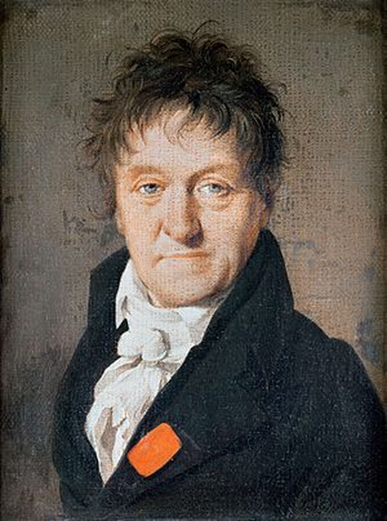
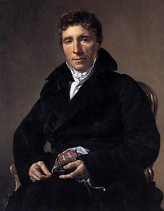
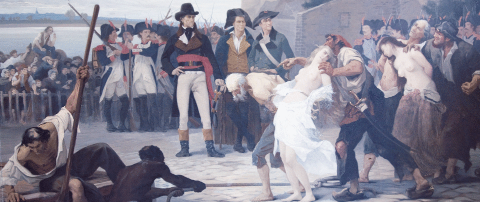
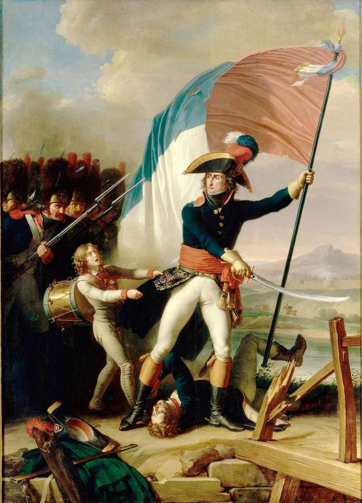
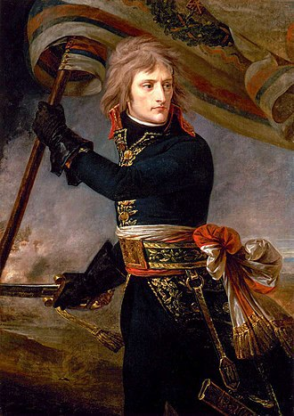
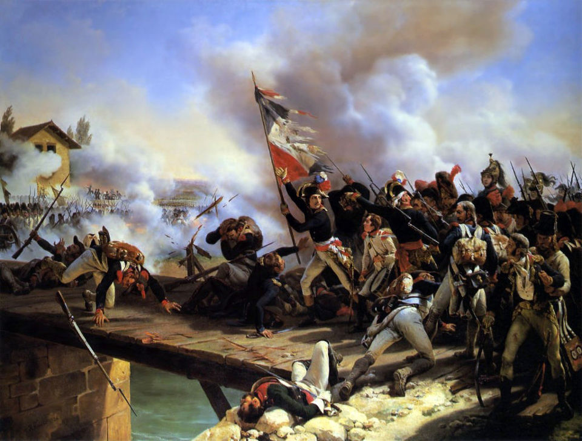

스톡홀름의 프랑스 왕 (5편) - 애매모호한 관계
게시: 2018-07-30T06:30:00+09:00
1798년은 베르나도트에게 인생의 전환점이 되던 해였습니다. 데지레와 결혼하여 나폴레옹의 인척이 되었을 뿐만 아니라, 관운도 잘 트이기 시작했던 것입니다. 예나 지금이나 군인에게 관운이 트인다는 것은 전쟁이 났다는 뜻이지요. 그 해 연말 경에 나폴레옹의 이집트 원정과 스위스에서의 시민 혁명이 촉매가 되어 제2차 대불동맹전쟁이 벌어진 것입니다. 이에 따라 11월, 그는 1개 감시군(l'armée d'observation)의 총사령관이 되어 라인강을 넘어 바덴-뷔르템베르크(Baden-Württemberg)의 필립스부르크(Philippsburg)로 진격하라는 임무를 받게 됩니다. 그러나 드디어 나폴레옹이나 모로, 오슈처럼 1개 군의 총사령관이 될 수 있던 이 기회는 결국 흐지부지 되고 말았습니다. 애초에 아무 준비도 없이 시작한 전쟁이다보니 북부 이탈리아와 독일 전선에서 프랑스군은 연전연패를 이어갔기 때문에 베르나도트가 지휘할 감시군은 아예 편성조차 되지 못했고, 라인강을 넘을 기회도 없어졌던 것입니다.
하지만 1799년 7월, 베르나도트에게 더 큰 기회가 왔습니다. 일개 방면군 사령관보다 훨씬 더 높은 국방부 장관(ministre de la Guerre)이 된 것입니다. 당시 프랑스군은 제2차 대불동맹전쟁에서 연전연패하고 있었는데, 이는 주로 형편없는 보급과 병력 충원 때문이었습니다. 제2차 대불동맹전쟁이 시작되면서 스위스 방면 감시군 사령관으로 부임했던 주르당(Jean-Baptiste Jourdan)이 조사 보고한 바와 같이, 각 방면군들의 상태는 도저히 전쟁을 벌일 준비가 전혀 안 되어 있는 상태였습니다. 제1차 대불동맹전쟁 때 프랑스가 승리할 수 있었던 것은 나폴레옹의 활약 외에도 국방부 장관으로 있던 카르노(Lazare Carnot)의 뛰어난 활약 덕분이었습니다. 그는 군대에 물자를 보급하기 위해 전국 교회의 종을 압류하여 녹이고 화학자들을 불러모아 질산칼륨을 제조하고 새로운 무두질 방법을 개발하는 등 온갖 노력을 기울여 병력과 물자를 전선으로 보냈고, 덕분에 승리의 조직자(L'Organisateur de la Victoire)라는 칭송을 받은 바 있었습니다. 그런데 그랬던 프랑스군이 1798년 말에는 왜 이 모양이 되었느냐고요 ? 나폴레옹과 총재들이 1798년 9월의 프릭튀도르 친위 쿠테타를 일으켜 쫓아낸 인물 중에 카르노도 있었거든요.

(카르노입니다. 열역학에 나오는 카르노는 이 양반이 아니라 이 양반의 아들인 Sadi Carnot 입니다만, 이 양반도 당대의 저명한 수학자이자 물리학자였습니다. 이 양반은 프릭튀도르 쿠데타로 쫓겨난 바로 그 해 스위스 제네바에서 la métaphysique du calcul infinitésimal, 즉 무한 미적분의 형이상학이라는 이름조차 어려운 수학책을 발표했습니다. 상황이 안 돼서 공부를 못한다는 말을 부끄럽게 만드는 아주 잔인한 양반입니다.)
어찌 보면 베르나도트에게 가장 잘 어울리는 일은 현장에서 용맹과 지략을 발휘하는 현장 지휘관보다는 이런 행정가로서의 역할이었을 것입니다. 그는 의욕을 가지고 프랑스군 보급 및 충원을 위한 조치들을 취해 나가며 카르노의 공백을 메우기 시작했습니다. 그러나 이 또한 얼마 가지 못했습니다. 베르나도트가 내지도 않은 사임서가 신문에 게재되었고, 이것이 발단이 되어 베르나도트는 더럽고 치사해서라도 진짜 장관직을 그만 두어야 했습니다. 이는 총재 정부의 시에예스(Emmanuel Joseph Sieyès)와 뒤코(Pierre Roger Ducos)가 꾸민 음모였는데, 궁극적으로는 여기에도 나폴레옹이 간접적으로 관여되어 있었습니다. 사실상 실패한 이집트 원정군을 내팽개치고 나폴레옹이 홀몸으로 프랑스에 귀국하자, 이미 현정권으로는 죽도 밥도 안되겠다고 생각했던 시에예스 등의 총재들은 나폴레옹을 이용하여 다시 한번 친위 쿠데타를 일으키려고 하고 있었던 것입니다. 그러자면 국방부 장관의 협조도 필요했는데, 파리 정계에서 베르나도트가 어울리는 인물들이 자코뱅파 사람들이라는 것이 알려지자 '열혈 자코뱅이 친위 쿠데타에 협조할 리가 없다'라고 판단을 내리고 베르나도트를 미리 뽑아내 버린 것이었습니다.

(시에예스입니다. 제가 고등학교 다닐 때 세계사 시간에 프랑스 대혁명 관련하여 이 사람이 지은 다음의 명문을 배우기도 했습니다. 물론 사람 자체는 쓰레기에 가깝습니다만, 쓰레기가 지은 문장이라고 해도 정말 뛰어난 문장입니다.
Qu’est-ce que le Tiers-État ? Tout. 제3 계급은 무엇인가 ? 모든 것이다.
Qu’a-t-il été jusqu’à présent dans l’ordre politique ? Rien. 여태까지 정치 체계에서 그것은 어떤 것이었나 ? 아무 것도 아니었다.
Que demande-t-il ? À y devenir quelque chose. 그것이 요구하는 것은 무엇인가 ? 무언가가 되는 것이다.)
나폴레옹은 물론 시에예스 따위의 정치 협잡꾼들이 좌지우지할 수 있는 바지저고리가 아니었습니다. 브뤼메르 쿠데타는 그런 썩어빠진 총재 정부의 잔당들을 위해서가 아니라 새로운 질서를 꿈꾸던 나폴레옹의 주도하에 이루어졌는데, 나폴레옹도 쿠데타를 위해서 직접 베르나도트의 협조를 구했습니다. 그는 브뤼메르 쿠데타가 시작되던 브뤼메르 18일 (1799년 11월 9일) 아침에도 베르나도트를 불러 최소한 중립을 유지해줄 것을 정중하게 부탁했으나, 베르나도트의 답변은 '당신의 쿠데타를 적극적으로 막지는 않겠다... 하지만 의회가 너를 진압하라는 명령을 내린다면 난 그 명령에 복종할 것이다' 라는 참으로 애매모호한 대답이었습니다. 확실히 베르나도트는 뛰어난 실력을 가진 자코뱅 원칙주의자일 뿐, 용맹과 지략이 뛰어난 사람은 아니었던 모양입니다. 결국 나폴레옹은 베르나도트와 동서지간이었던 자신의 형 조제프에게 '그와 식사라도 하며 하루 종일 그를 감시해달라'고 부탁해야 했습니다.
이렇게 나폴레옹이 쿠데타로 권력을 잡자, 베르나도트와의 관계는 그날 아침의 답변처럼 정말 애매모호한 것이 되어 버렸습니다. 분명히 쿠데타에 협조한 공신록에 이름을 올릴 사람은 아니었지만 나폴레옹 본인과 혼인 관계로 얽힌 인척인데다 최소한 쿠데타에 적대적인 태도를 보이지는 않았고, 무엇보다 무시할 수 없는 실력자인 것도 사실이었기 때문입니다. 결국 나폴레옹은 베르나도트에게 그의 답변처럼 애매모호한 임무를 주었습니다. 그가 그토록 원했던 일개 군의 총사령관, 즉 서부 방면군(l' armée de l'Ouest) 사령관으로 임명하되, 너무 참혹한 학살과 보복으로 점철되어 다들 꺼리는 분위기였던 방데(Vendée) 지방 반란 진압의 임무를 준 것이었지요. 그런데 베르나도트는 이 임무를 약 1년에 걸쳐 또 매우 훌륭하게 잘 수행해냈습니다. 하긴 왕당파의 깃발을 올리고 반란을 일으킨 농민들을 잔혹하게 숙청하는 것에 대해, 가슴에 '왕들에게 죽음을(Mort aux rois)'이라는 문신까지 간직한 열혈 자코뱅 베르나도트는 조금도 거리낌이 없었을 것 같긴 합니다.

(이 그림은 1793년 낭트(Nantes)가 함락된 이후 자코뱅 혁명군이 카톨릭을 신봉하는 왕당파 시민들을 물에 빠뜨려 죽이는 장면입니다. 원래는 포로로 잡힌 시민들을 구석에 몰아넣고 그냥 마구잡이 사격으로 사살했는데, 기관총이 아닌 관계로 그 사살 속도가 시원스럽지 않자 대형 보트에 시민들을 잔뜩 싣고 강 한 가운데로 가서 보트들을 통째로 침몰시켰다고 합니다. 반란에 참여하지 않은 시민들도 가리지 않고 학살하기도 했으며, 저 그림에서 묘사된 것처럼 여성들의 옷을 벗기고 다른 남성과 함께 묶은 채 길거리에서 조리돌림을 하다가 죽이기도 하는 등, 방데에서는 그야말로 끔찍한 제노사이드(genocide)의 전쟁 범죄가 횡행했습니다. 이런 야만적 진압은 결국 반작용을 낳아 방데 지방에서는 이후로도 계속 크고 작은 반란이 계속 되었습니다.)
이런 식으로 베르나도트는 나폴레옹의 껄끄러운 측근으로 비교적 조용히 지냈습니다. 그리고 나폴레옹이 황제로 즉위할 때 임명한 18명의 초대 육군 원수들 중 하나가 되었습니다. 따지고 보면 엄청난 전공이 있었던 것도 아니고 나폴레옹의 충신도 아닌데 원수로 임명된 것이 이상하게 여겨질 수도 있습니다. 그러나 초대 18명의 원수들 중에는 그런 어정쩡한 위치의 사람들이 꽤 많습니다. 가령 뚜렷한 전공도 없이 허명만 요란한 주르당의 경우 나폴레옹의 브뤼메르 쿠데타 때 근위대 병사들에게 두들겨 맞으며 생 끌뤼(Saint Cloud)에서 쫓겨난 의원들 중 하나일 정도로 나폴레옹과는 대립각이 있는 사람이었는데도 이 명단에 들어갔습니다. 또 오쥬로(Pierre Augereau)의 경우 나폴레옹의 제1차 이탈리아 침공 당시 마세나와 함께 나폴레옹의 필승 원투펀치로 활약했지만, 정치적으로 철저한 자코뱅이라서 결국 나폴레옹의 심복이 되지는 못한 사람이었는데 그도 명단에 올라갔지요. 반면 나폴레옹의 초창기부터의 심복이자 전공도 많았던 마르몽(Auguste de Marmont)은 1809년에나 원수가 됩니다. 즉, 당시 누가 원수가 되느냐는 단지 얼마나 잘 싸우고 나폴레옹과 얼마나 친하냐에 따라 결정되는 것이 아니라, 군과 정계에 얼마나 영향력이 있는 인물인가에 따라 결정되었습니다. 나폴레옹은 독재 권력을 추구했지만 그렇다고 모든 것을 마음대로 하는 전제군주가 아니라 국민의 지지에 의해 즉위한 황제였으므로 그런 사회 각계 각층의 눈치를 볼 수 밖에 없었던 것입니다.

(개인적으로 크게 의아하게 생각하는 부분이 총재정부 시절 나폴레옹 밑에서 크게 활약했던 오쥬로가 정작 나폴레옹이 권력을 잡은 이후에는 별 활약이 없었다는 점입니다. 이는 오쥬로의 철저한 자코뱅 성향 때문이라고도 하고 그냥 오쥬로의 그릇이 딱 거기까지일 뿐 더 뛰어난 장군들에게 밀린 결과라는 이야기도 있습니다. 다만 저는 오쥬로가 나폴레옹에게 물을 먹은 것은 이 그림 때문일지도 모른다고 생각합니다. 이 그림은 테브냉 Charles Thevenin이라는 화가가 총재정부의 위임을 받아 그린 '아르콜레 다리에서의 오쥬로'(AUGEREAU AU PONT D’ARCOLE) 라는 그림인데, 이 그림에서는 아르콜레 다리를 앞장 서서 돌파한 사람이 나폴레옹이 아니라 오쥬로로 되어 있습니다. 실제로 나폴레옹은 저렇게 깃발을 들고 자살 공격대의 맨 앞에 서지 않았지요. 이 그림은 나폴레옹이 권력을 잡은 뒤 그로 및 베르네 등의 더 뛰어난 화가들의 그림으로 신속하게 교체되었습니다. 나폴레옹 같은 거물이 그렇게 치사했겠냐고요 ? 치사했습니다.)


(윗그림은 유명한 그로(Antoine-Jean Gros)의 '아르콜레 다리에서의 나폴레옹'이고 아래 그림은 베르네(Horace Vernet)의 같은 제목의 그림입니다.)
그렇게 나폴레옹 치하에서 확고하게 자리를 잡은 베르나도트는 하노버(Hanover) 등 주로 독일 북부 지방에서 총독으로 근무했습니다. 그의 통치는 평이 나쁘지 않았습니다. 워낙 뛰어난 행정가였던데다 합리적이고 중용적인 태도를 가지고 있었으므로 프랑스 제국의 압제 하에 신음하는 처지였던 하노버 지방 사람들은 큰 반란이나 폭동을 일으키지 않고 그의 통치에 순종하는 편이었습니다. 당연히 그의 권위도 그에 따라 높아지고 있었습니다. 그 때문인지 또는 데지레 때문인지 그는 1805년 12월의 아우스테를리츠 전투에서 주로 예비대로 있다가 전투 막판에 투입되어 상대적으로 전공이 그다지 크지 않았는데도 불구하고 폰테 코르보 대공(1st Sovereign Prince of Ponte Corvo)이 되어 드디어 귀족의 반열에 오르는 영광까지 누리게 되었습니다.
하지만 나폴레옹에게 있어 베르나도트는 여전히 껄끄러운, 상전같은 부하에 불과했습니다. 그리고 그런 껄끄러운 관계에 기름을 끼얹는 사건이 곧 벌어집니다.
** 다음 편은 많이들 짐작하시다시피 과거에 이미 다룬 유명 전투들 이야기가 됩니다. 제 블로그에 처음 오시는 분도 있을 것이고 또 내용 전개상 건너 뛰고 갈 수는 없어서 다루긴 다뤄야 하는데, 아무래도 과거에 썼던 글의 재탕이라고 느끼실 분도 있을 것입니다. 해서, 다음 편인 제6편은 원래 재탕글을 올리는 목요일 아침에 올리도록 하겠습니다. (저로서는 다음 편은 날로 먹으려고 했는데 잘 안 되는군요...)
Source : The Life of Napoleon Bonaparte by William M. Sloane
https://en.wikipedia.org/wiki/Charles_XIII_of_Sweden
https://en.wikipedia.org/wiki/D%C3%A9sir%C3%A9e_Clary
https://fr.wikipedia.org/wiki/Charles_XIV_Jean
https://en.wikipedia.org/wiki/Lazare_Carnot
https://www.napoleon.org/histoire-des-2-empires/iconographie/augereau-au-pont-darcole-15-novembre-1796/